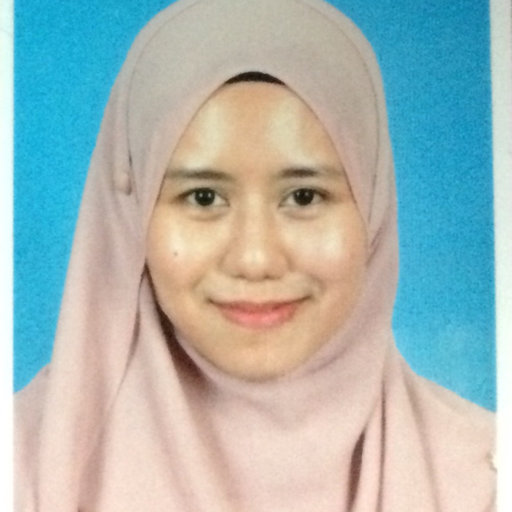

Top cited article

Hazwani Mohd Mohadis
Assistant Professor
Kulliyyah of Information and Communication Technology, IIUM

Hi!
I have a great interest in the field of Human Computer Interaction (HCI) particularly games immersion, participant observation, ethnography and persuasive design. This passion finally motivates me to pursue my study in MSc Human Computer Interaction with Ergonomics (MSc HCI-E) at University College London (UCL).Throughout 12 months of study, MSc HCI-E programme provides a great opportunity for me to learn through information, demonstration, exploration and application, a scientific human-centred approach to the design and evaluation of a wide range of interactive systems and products, and their contexts of use. Among subjects that I had taken are Ergonomics for Design, Design Experience, Design Practice, Applied Cognitive Science, User-Centred Evaluation Methods, Affective Interaction, Organizational Informatics, and Interfaces and Interactivity.
The breadth of subjects covered helped me to gain a set of skills that was instrumental in developing my research in a much more interesting direction. It also provides a strong research foundation and makes me ideally suited to conduct an extensive research in Human Computer Interaction and pursue my study for PhD in this growing field.